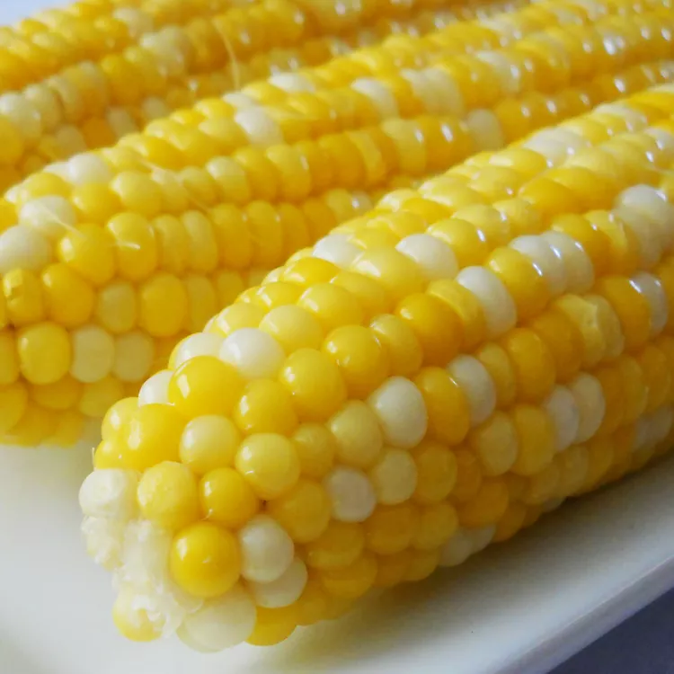

Corn on the cob

Decription
Corn on the cob is cooked in boiled water with a little
sugar and lemon juice for the sweetest, tastiest corn!
My mother-in-law gave me this easy recipe.
Ingredients
- 2 tablespoons white sugar
- 1 tablespoon lemon juice
- 6 ears corn on the cob, husks and silk removed
Steps
- a large pot about 3/4 full of water and bring to a boil. Stir in sugar and lemon juice until sugar is
dissolved.
- Gently place ears of corn into boiling water, cover the pot, turn off the heat, and let corn cook in the hot
water until tender, about 10 minutes.